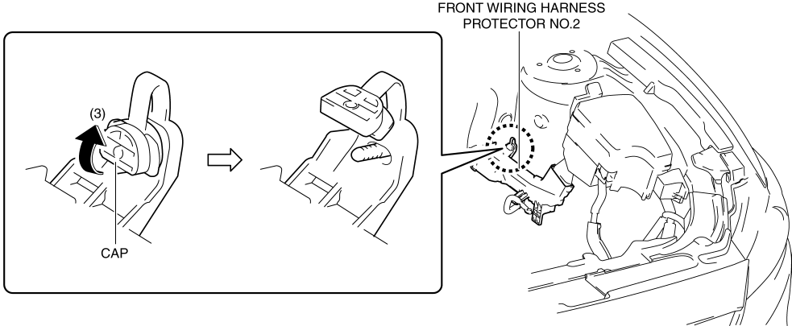

< Previous
Next >
2014 -
Mazda6 -
Body and Accessories
FRONT WIRING HARNESS PROTECTOR REMOVAL/INSTALLATION
Front Wiring Harness Protector No.1
1. Disconnect the negative battery cable. (See NEGATIVE BATTERY CABLE DISCONNECTION/CONNECTION [SKYACTIV-G 2.5].)
2. Remove the fresh-air duct. (See INTAKE-AIR SYSTEM REMOVAL/INSTALLATION [SKYACTIV-G 2.5].)
3. Insert a tape-wrapped flathead screwdriver into the service hole in the position shown in the figure.
4. While pressing the tabs of clip A in the direction of the arrows (1) shown in the figure, pull clip A in the direction of the arrow (2) shown in the figure to detach the tabs of clip A from the radiator.
5. Pull out clip A.
6. While pressing the tabs of clip B in the direction of the arrows (3) shown in the figure, pull clip B in the direction of the arrow (4) shown in the figure to detach the tabs of clip B from the front bumper.
7. Pull out clip B.
8. While pressing the clip tabs in the direction of the arrows (5) shown in the figure, pull the front wiring harness protector No.1 in the direction of the arrow (6) to detach the clip tabs from the radiator.
9. Detach all the clip tabs from the radiator and pull out the front wiring harness protector No.1 from the radiator.
10. Insert a tape-wrapped flathead screwdriver into the gap between front wiring harness protector No.1 and the tab shown in the figure.
11. While lifting up the hook in the direction of the arrow (7) shown in the figure using a flathead screwdriver, pull the hook in the direction of the arrows (8) shown in the figure to detach the tab from the hook.
12. Detach all the tabs from hooks and remove the front wiring harness protector No.1.
13. Install in the reverse order of removal.
Front Wiring Harness Protector No.2
1. Disconnect the negative battery cable. (See NEGATIVE BATTERY CABLE DISCONNECTION/CONNECTION [SKYACTIV-G 2.5].)
2. Remove the battery tray. (See BATTERY REMOVAL/INSTALLATION [SKYACTIV-G 2.5].)
3. While pressing the clip tabs of front wiring harness protector No.2 in the direction of the arrows (1) shown in the figure, pull the clip of front wiring harness protector No.2 in the direction of the arrow (2) shown in the figure to detach the clip tabs of front wiring harness protector No.2 from the engine mount.
4. Pull out the clip.
5. Lift up the cap of front wiring harness protector No.2 in the direction of the arrow (3) shown in the figure.

6. Pull out the front wiring harness protector No.2 from the stud bolt and set it aside as shown in the figure.
7. While pressing the clip tabs in the direction of the arrows (4) shown in the figure, push out the clip in the direction of the arrow (5) shown in the figure to detach the clip tabs from the front wiring harness protector No.2.
8. Pull out the clip.
9. Insert a tape-wrapped flathead screwdriver into the gap between front wiring harness protector No.2 and the tab shown in the figure.
10. While lifting up the hook in the direction of the arrow (6) shown in the figure using a flathead screwdriver, pull the hook in the direction of the arrows (7) shown in the figure to detach the tab from the hook.
11. Detach all the tabs from hooks and remove the front wiring harness protector No.2.
12. Install in the reverse order of removal.
< Previous
Next >
© 2012 Mazda North American Operations, U.S.A.